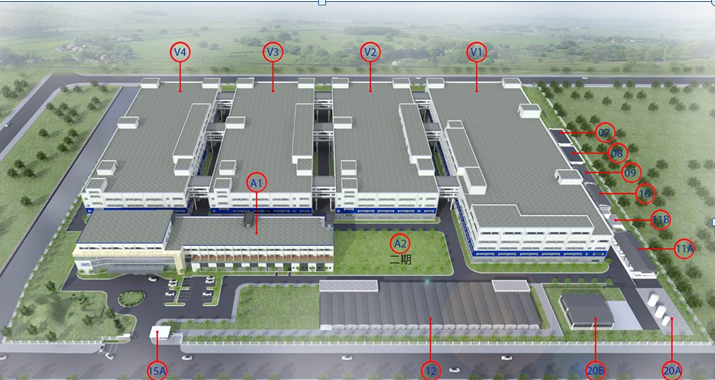
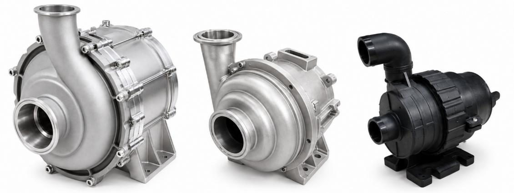
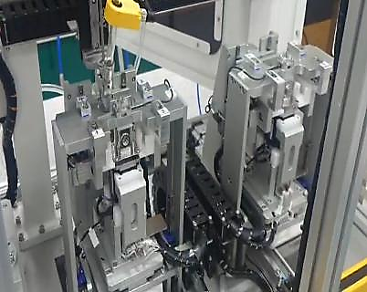
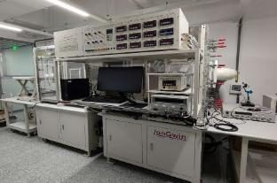
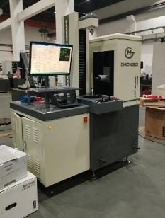

Fully in-house verification capability — from concept to mass production.
完整自主驗證能力 — 從概念設計到量產,一氣呵成。
The Vietnam factory also includes thermal module, chassis and hinge production lines alongside pump, motor and valve manufacturing — supporting flexible capacity scaling as demand grows.
越南廠區除泵浦、馬達與閥件產線外,亦涵蓋散熱模組、機殼與轉軸等產線,可隨需求成長彈性擴充產能。


Automated winding line, auto-assembly line, and OQA test stations for stable, scalable output.
自動繞線線、自動組裝線與 OQA 出貨檢驗站,確保穩定且可擴充的產出。

Automated O-ring assembly, motor-to-valve press-fit, zero-point calibration, leak test and run-in test equipment.
自動化 O 環組裝、馬達閥體壓合、零點校正、洩漏測試與運轉測試設備。
6 production lines · 8kK / line / month capacity.
共 6 條產線．每線每月產能 8kK。
Capacity: 22K units / month.
產能:每月 22K 台。
In-house injection molding supporting pump, motor and valve housings.
自有射出成型產線,支援泵浦、馬達與閥件外殼製造。
Micro · 1U–2U · 4U–8U form factors.
涵蓋 Micro．1U–2U．4U–8U 各式規格。
BLDC · Lead Screw Motor · Stepper Motor.
BLDC．螺桿馬達．步進馬達。
Motor valve · Planetary gears.
電動閥．行星齒輪。
ORT (Ongoing Reliability Test) covers Motor / Valve / Pump product lines.ORT(持續可靠度測試)涵蓋馬達／閥件／泵浦全產品線。

Dedicated test stations validating electrical and functional performance before mass production.
專屬測試站於量產前驗證電性與功能表現。

Mechanical test equipment for structural integrity and load validation.
機構測試設備驗證結構完整性與承載能力。
| Reliability Test可靠度測試 | Test Parameters測試參數 |
|---|---|
| Valve Actuation Endurance閥件動作耐久測試 | 10%–100% PWM actuation, 1.5s/cycle, up to 1,000,000 cycles with inline test every 200,000 cycles.PWM 10%–100% 動作,每循環 1.5 秒,累計 1,000,000 次循環,每 200,000 次進行檢測。 |
| Thermal Cycling溫度循環測試 | 5°C ↔ 60°C dwell 30 min each, 5°C/min ramp, 96 total cycles with inline test at 0/24/48/96 cycles.5°C ↔ 60°C 各停留 30 分鐘,爬升速率 5°C/分鐘,共 96 循環,於第 0/24/48/96 次進行檢測。 |
| Pressure Cycling壓力循環測試 | 100psi / 0psi dwell 15s each, 10,000 total cycles with inline test every 2,500 cycles.100psi／0psi 各停留 15 秒,共 10,000 次循環,每 2,500 次進行檢測。 |
| Packaging Drop Test包裝跌落測試 | Per ASTM D4169 Schedule A, Level 2 — 4 rotational corner/edge/flat drops with pre/post functional inline test.依 ASTM D4169 Schedule A, Level 2 標準,執行 4 個角／邊／面跌落,並於前後進行功能檢測。 |
| Packaging Vibration Test包裝振動測試 | Per ASTM D4169 Schedule E, Level 2, in final packaging, with pre/post functional inline test.依 ASTM D4169 Schedule E, Level 2 標準,以最終包裝進行測試,並於前後進行功能檢測。 |